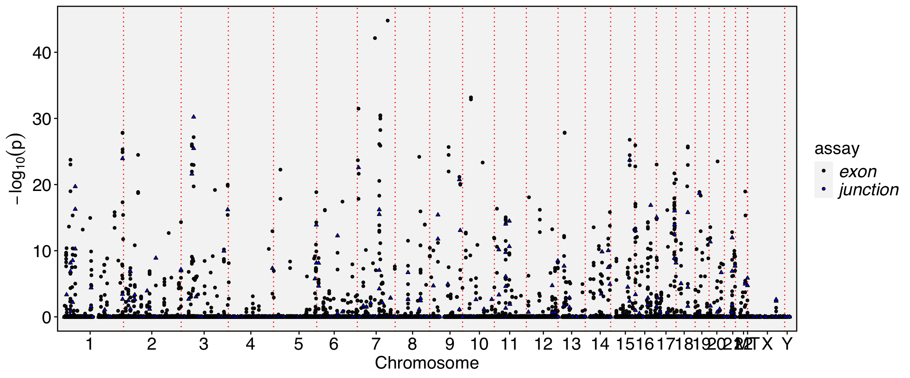

require(Yano)Spatial dissimilarity analysis for single-cell trajectories and supervised embeddings
In the previous vignette, we performed cell clustering using unsupervised methods. Typically, a PCA or integrated space (e.g., Harmony) is generated during this process, and we then calculate the cell weight matrix directly from the cell embedding space. This approach is convenient for running the pipeline, and provide the general result in all cell population. Furthermore, for specific signaling or biological pathways, it is often more informative to focus on a ‘supervised’ cell ordering. This vignette demonstrates how to perform spatial dissimilarity test in low-dimensional spaces, such as cell trajectory.
Prepare raw data
We used the human testis single-cell atlas dataset for this analysis. The full dataset is publicly available at GSE112013. For this vignette, we only used replicate 1.
## We first download the BAM files and GTF file
wget -c https://sra-pub-src-1.s3.amazonaws.com/SRR6860519/14515X1.bam.1 -O donor1_rep1.bam
wget -c https://sra-pub-src-1.s3.amazonaws.com/SRR6860520/14606X1.bam.1 -O donor1_rep2.bam
## Please Note: we use a different annotation file from previos vignette, because the BAM file use NCBI style chromosome name here.
wget https://ftp.ensembl.org/pub/release-114/gtf/homo_sapiens/Homo_sapiens.GRCh38.114.chr.gtf.gz
## Index the bam files for track plots
samtools index donor1_rep1.bam
samtools index donor1_rep2.bam
## Then we use PISA to generate feature counts
PISA anno -gtf Homo_sapiens.GRCh38.114.chr.gtf.gz -exon -psi -o d1_rep2_anno.bam donor1_rep2.bam
PISA anno -gtf Homo_sapiens.GRCh38.114.chr.gtf.gz -exon -psi -o d1_rep1_anno.bam donor1_rep1.bam
mkdir exp1
mkdir exp2
mkdir exon1
mkdir exon2
mkdir junction1
mkdir junction2
mkdir exclude1
mkdir exclude2
PISA count -tag CB -umi UB -anno-tag GN -outdir exp1 d1_rep1_anno.bam
PISA count -tag CB -umi UB -anno-tag GN -outdir exp2 d1_rep2_anno.bam
PISA count -tag CB -umi UB -anno-tag EX -outdir exon1 d1_rep1_anno.bam
PISA count -tag CB -umi UB -anno-tag EX -outdir exon2 d1_rep2_anno.bam
PISA count -tag CB -umi UB -anno-tag JC -outdir junction1 d1_rep1_anno.bam
PISA count -tag CB -umi UB -anno-tag JC -outdir junction2 d1_rep2_anno.bam
# Note: Although we generate the excluded reads here, we do not use them in this demonstration for the sake of simplicity. However, it is recommended to test them in real cases, so I’ve kept the data available for you to use in your own analyses.
PISA count -tag CB -umi UB -anno-tag ER -outdir exclude1 d1_rep1_anno.bam
PISA count -tag CB -umi UB -anno-tag ER -outdir exclude2 d1_rep2_anno.bamCell clustering and annotation
exp1 <- ReadPISA("exp1/", prefix = "d1-rep1-")
exp2 <- ReadPISA("exp2/", prefix = "d1-rep2-")
exp <- mergeMatrix(exp1, exp2)
obj <- QuickRecipe(exp, min.features = 800, min.cells = 100, resolution=0.2)
rm(exp1, exp2, exp)
obj$replicate <- gsub("d1-(.*)-.*-1", "\\1", colnames(obj))DimPlot(obj, label = TRUE, label.size = 5)Warning: `aes_string()` was deprecated in ggplot2 3.0.0.
ℹ Please use tidy evaluation idioms with `aes()`.
ℹ See also `vignette("ggplot2-in-packages")` for more information.
ℹ The deprecated feature was likely used in the Seurat package.
Please report the issue at <https://github.com/satijalab/seurat/issues>.
FeaturePlot(obj, features = c("CD14", "VIM", "VWF", "ACTA2", "DLK1", "DAZL", "MAGEA4", "UTF1", "ID4", "FGFR3", "KIT", "DMRT1", "DMRTB1", "STRA8", "SYCP3", "SPO11", "MLH3", "ZPBP", "TNP1", "PRM2"), ncol=5, order=TRUE) & NoAxes() & NoLegend()Warning: The `slot` argument of `FetchData()` is deprecated as of SeuratObject 5.0.0.
ℹ Please use the `layer` argument instead.
ℹ The deprecated feature was likely used in the Seurat package.
Please report the issue at <https://github.com/satijalab/seurat/issues>.
new.cluster.ids <- c("Sperm", "Early primary S'cytes", "Leydig cells", "Round S'tids", "Differentiating S'gonia", "Elongated S'tids", "Endothelial cells", "SSCs", "Myoid cells", "Sertoli cells", "Macrophages", "Later primary S'cytes", "Sertoli-like")
names(new.cluster.ids) <- levels(obj)
obj <- RenameIdents(obj, new.cluster.ids)DimPlot(obj, reduction = "umap", label = TRUE, pt.size = 0.5) + NoLegend()
Cell development trajetory construction
We now select germline cells from the dataset and construct the cell development trajectory using a principal curve. Although there are many well-documented methods for constructing linear trajectories, here we use a straightforward and perhaps the simplest approach purely for demonstration purposes.
sel <- DimSelector(obj)
obj.sel <- obj[,sel]
require(princurve)Loading required package: princurveemb <- Embeddings(obj.sel, 'umap')
emb0 <- as.data.frame(emb)
emb0$idents <- Idents(obj)[rownames(emb0)]
emb0 %>% group_by(idents) %>% summarize(x=median(umap_1),y=median(umap_2)) -> emb1
emb2 <- as.matrix(emb1[,c("x","y")])
rownames(emb2) <- emb1$idents
emb2 <- emb2[c("SSCs", "Differentiating S'gonia", "Early primary S'cytes", "Later primary S'cytes", "Round S'tids", "Elongated S'tids", "Sperm"),]
pc <- princurve::principal_curve(x = emb, start = emb2)
s <- as.data.frame(pc$s)
colnames(s) <- c("x", "y")
emb0 <- cbind(emb0, s)
emb0 <- emb0[pc$ord, ]
ggplot(emb0)+ geom_point(aes(umap_1, umap_2, color = idents)) + geom_path(aes(x,y), color = "blue", linewidth=1)+ geom_point(data = emb2, aes(x, y), size=2) 
Perform alternative splicing analysis along the cell trajetory
cells <- colnames(obj.sel)
exon1 <- ReadPISA("exon1/", prefix = "d1-rep1-", cells = cells)
exon2 <- ReadPISA("exon2/", prefix = "d1-rep2-", cells = cells)
exon <- mergeMatrix(exon1, exon2)
junction1 <- ReadPISA("junction1/", prefix = "d1-rep1-", cells = cells)
junction2 <- ReadPISA("junction2/", prefix = "d1-rep2-", cells = cells)
junction <- mergeMatrix(junction1, junction2)
obj.sel[['exon']] <- CreateAssayObject(exon, min.cells = 100)
obj.sel[['junction']] <- CreateAssayObject(junction, min.cells = 100)
rm(exon, exon1,exon2, junction, junction1, junction2)
order.cells <- rownames(emb0)
DefaultAssay(obj.sel) <- "exon"
obj.sel <- NormalizeData(obj.sel)Warning: The `slot` argument of `SetAssayData()` is deprecated as of SeuratObject 5.0.0.
ℹ Please use the `layer` argument instead.
ℹ The deprecated feature was likely used in the Seurat package.
Please report the issue at <https://github.com/satijalab/seurat/issues>.Warning: The `slot` argument of `GetAssayData()` is deprecated as of SeuratObject 5.0.0.
ℹ Please use the `layer` argument instead.
ℹ The deprecated feature was likely used in the Seurat package.
Please report the issue at <https://github.com/satijalab/seurat/issues>.obj.sel <- ParseExonName(obj.sel)When setup order cells, the weight matrix name will be named to “trajectory_wm”.
obj.sel <- RunAutoCorr(obj.sel, order.cells = order.cells, wm.name = "trajectory_wm")Working on assay : exonRun autocorrelation test for 72346 features.Runtime : 7.320331 secs69085 autocorrelated features.obj.sel <- RunSDT(obj.sel, wm.name = "trajectory_wm", bind.name = "gene_name", bind.assay = "RNA")Working on assay exon.Working on binding assay RNA.Use predefined weight matrix "trajectory_wm".Processing 69085 features.Processing 13893 binding features.Retrieve binding data from assay RNA.Use "data" layer for test features and binding features.Using 63 threads.Runtime : 1.678657 mins.DefaultAssay(obj.sel) <- "junction"
obj.sel <- NormalizeData(obj.sel)
obj.sel <- ParseExonName(obj.sel)Working on assay junctionobj.sel <- RunAutoCorr(obj.sel, order.cells = order.cells, wm.name = "trajectory_wm")Working on assay : junctionRun autocorrelation test for 7583 features.Runtime : 1.724156 secs7350 autocorrelated features.obj.sel <- RunSDT(obj.sel, wm.name = "trajectory_wm", bind.name = "gene_name", bind.assay = "RNA")Working on assay junction.Working on binding assay RNA.Use predefined weight matrix "trajectory_wm".Processing 7350 features.Processing 3724 binding features.Retrieve binding data from assay RNA.Use "data" layer for test features and binding features.Using 63 threads.Runtime : 12.19241 secs.FbtPlot(obj.sel, val = "gene_name.padj", assay = c("exon", "junction"), shape.by = "assay", color.by = "assay")Warning: The `size` argument of `element_line()` is deprecated as of ggplot2 3.4.0.
ℹ Please use the `linewidth` argument instead.
ℹ The deprecated feature was likely used in the Yano package.
Please report the issue to the authors.Warning: The `size` argument of `element_rect()` is deprecated as of ggplot2 3.4.0.
ℹ Please use the `linewidth` argument instead.
ℹ The deprecated feature was likely used in the Yano package.
Please report the issue to the authors.
Meta(obj.sel, assay = "exon") %>% filter(gene_name.padj <1e-20) %>% knitr::kable()| chr | start | end | gene_name | strand | moransi.pval | moransi | autocorr.variable | gene_name.D | gene_name.t | gene_name.pval | gene_name.padj | |
|---|---|---|---|---|---|---|---|---|---|---|---|---|
| 1:25901491-25901682/-/STMN1 | 1 | 25901491 | 25901682 | STMN1 | - | 0 | 0.5278795 | TRUE | 0.4875836 | -13.44987 | 0 | 0 |
| 1:244854973-244855044/-/HNRNPU | 1 | 244854973 | 244855044 | HNRNPU | - | 0 | 0.0949886 | TRUE | 0.4769467 | -14.21070 | 0 | 0 |
| 1:244855424-244855608/-/HNRNPU | 1 | 244855424 | 244855608 | HNRNPU | - | 0 | 0.1388615 | TRUE | 0.5567881 | -17.70738 | 0 | 0 |
| 1:244855424-244855597/-/HNRNPU | 1 | 244855424 | 244855597 | HNRNPU | - | 0 | 0.1290250 | TRUE | 0.5457566 | -17.56482 | 0 | 0 |
| 1:244855424-244856096/-/HNRNPU | 1 | 244855424 | 244856096 | HNRNPU | - | 0 | 0.1170144 | TRUE | 0.5213700 | -15.91052 | 0 | 0 |
| 10:35179134-35179769/+/CREM | 10 | 35179134 | 35179769 | CREM | + | 0 | 0.2455856 | TRUE | 0.6284379 | -19.14346 | 0 | 0 |
| 10:35179134-35179847/+/CREM | 10 | 35179134 | 35179847 | CREM | + | 0 | 0.2604570 | TRUE | 0.6479287 | -18.81981 | 0 | 0 |
| 10:35179134-35179843/+/CREM | 10 | 35179134 | 35179843 | CREM | + | 0 | 0.2590280 | TRUE | 0.6468944 | -18.88875 | 0 | 0 |
| 10:84371014-84372469/+/CCSER2 | 10 | 84371014 | 84372469 | CCSER2 | + | 0 | 0.0586239 | TRUE | 0.4468654 | -14.86723 | 0 | 0 |
| 13:27622875-27623449/+/POLR1D | 13 | 27622875 | 27623449 | POLR1D | + | 0 | 0.1052446 | TRUE | 0.5752052 | -20.01386 | 0 | 0 |
| 13:27622841-27623452/+/POLR1D | 13 | 27622841 | 27623452 | POLR1D | + | 0 | 0.1055288 | TRUE | 0.5757230 | -20.01509 | 0 | 0 |
| 15:80131180-80131293/+/ZFAND6 | 15 | 80131180 | 80131293 | ZFAND6 | + | 0 | 0.1115395 | TRUE | 0.5305670 | -17.47967 | 0 | 0 |
| 15:80129600-80131293/+/ZFAND6 | 15 | 80129600 | 80131293 | ZFAND6 | + | 0 | 0.0789909 | TRUE | 0.4654133 | -13.47781 | 0 | 0 |
| 15:80137480-80137678/+/ZFAND6 | 15 | 80137480 | 80137678 | ZFAND6 | + | 0 | 0.1094172 | TRUE | 0.5234965 | -18.42618 | 0 | 0 |
| 15:80137480-80137811/+/ZFAND6 | 15 | 80137480 | 80137811 | ZFAND6 | + | 0 | 0.1121666 | TRUE | 0.5232729 | -17.37825 | 0 | 0 |
| 16:1883196-1883296/-/MEIOB | 16 | 1883196 | 1883296 | MEIOB | - | 0 | 0.1424097 | TRUE | 0.4472773 | -13.66882 | 0 | 0 |
| 16:1884097-1884294/-/MEIOB | 16 | 1884097 | 1884294 | MEIOB | - | 0 | 0.1597330 | TRUE | 0.4631423 | -14.10031 | 0 | 0 |
| 17:1345258-1345499/-/YWHAE | 17 | 1345258 | 1345499 | YWHAE | - | 0 | 0.0585832 | TRUE | 0.4741013 | -15.42830 | 0 | 0 |
| 18:49482152-49482410/-/RPL17-C18orf32 | 18 | 49482152 | 49482410 | RPL17-C18orf32 | - | 0 | 0.1492619 | TRUE | 0.5758458 | -17.84863 | 0 | 0 |
| 18:49482176-49482410/-/RPL17-C18orf32 | 18 | 49482176 | 49482410 | RPL17-C18orf32 | - | 0 | 0.1497271 | TRUE | 0.5738747 | -17.61040 | 0 | 0 |
| 18:49483584-49483771/-/RPL17-C18orf32 | 18 | 49483584 | 49483771 | RPL17-C18orf32 | - | 0 | 0.1856806 | TRUE | 0.5247690 | -13.55099 | 0 | 0 |
| 2:61141592-61143945/-/C2orf74-AS1 | 2 | 61141592 | 61143945 | C2orf74-AS1 | - | 0 | 0.0686979 | TRUE | 0.4696162 | -14.44069 | 0 | 0 |
| 3:45011235-45011393/+/EXOSC7 | 3 | 45011235 | 45011393 | EXOSC7 | + | 0 | 0.1386183 | TRUE | 0.4829170 | -13.95754 | 0 | 0 |
| 3:45011235-45011471/+/EXOSC7 | 3 | 45011235 | 45011471 | EXOSC7 | + | 0 | 0.1526446 | TRUE | 0.5113871 | -16.34435 | 0 | 0 |
| 3:45011235-45011470/+/EXOSC7 | 3 | 45011235 | 45011470 | EXOSC7 | + | 0 | 0.1538392 | TRUE | 0.5140713 | -16.28410 | 0 | 0 |
| 3:52413996-52414048/+/PHF7 | 3 | 52413996 | 52414048 | PHF7 | + | 0 | 0.1191394 | TRUE | 0.4977642 | -15.63829 | 0 | 0 |
| 3:52414496-52414844/+/PHF7 | 3 | 52414496 | 52414844 | PHF7 | + | 0 | 0.1184333 | TRUE | 0.5230850 | -16.66897 | 0 | 0 |
| 5:28810519-28810897/+/LINC02109 | 5 | 28810519 | 28810897 | LINC02109 | + | 0 | 0.0986449 | TRUE | 0.4722125 | -16.00890 | 0 | 0 |
| 5:28810550-28810903/+/LINC02109 | 5 | 28810550 | 28810903 | LINC02109 | + | 0 | 0.0701557 | TRUE | 0.4277398 | -13.60694 | 0 | 0 |
| 7:2234198-2235564/-/ENSG00000286192 | 7 | 2234198 | 2235564 | ENSG00000286192 | - | 0 | 0.1423877 | TRUE | 0.4940253 | -16.14086 | 0 | 0 |
| 7:4984910-4985075/+/RBAK-RBAKDN | 7 | 4984910 | 4985075 | RBAK-RBAKDN | + | 0 | 0.1601588 | TRUE | 0.5337896 | -15.86273 | 0 | 0 |
| 7:74196642-74197050/+/EIF4H | 7 | 74196642 | 74197050 | EIF4H | + | 0 | 0.1368357 | TRUE | 0.6534230 | -23.13141 | 0 | 0 |
| 7:92244002-92244149/-/ENSG00000285953 | 7 | 92244002 | 92244149 | ENSG00000285953 | - | 0 | 0.2009752 | TRUE | 0.5384564 | -15.96033 | 0 | 0 |
| 7:92244902-92245134/-/ENSG00000285953 | 7 | 92244902 | 92245134 | ENSG00000285953 | - | 0 | 0.1693093 | TRUE | 0.4867808 | -13.39452 | 0 | 0 |
| 7:96645724-96645936/-/SEM1 | 7 | 96645724 | 96645936 | SEM1 | - | 0 | 0.0585854 | TRUE | 0.5223758 | -15.36340 | 0 | 0 |
| 7:96645390-96645932/-/SEM1 | 7 | 96645390 | 96645932 | SEM1 | - | 0 | 0.0631824 | TRUE | 0.5432079 | -17.49861 | 0 | 0 |
| 7:96645391-96645932/-/SEM1 | 7 | 96645391 | 96645932 | SEM1 | - | 0 | 0.0625540 | TRUE | 0.5377379 | -16.90471 | 0 | 0 |
| 7:96645588-96645936/-/SEM1 | 7 | 96645588 | 96645936 | SEM1 | - | 0 | 0.0677891 | TRUE | 0.5478922 | -16.87904 | 0 | 0 |
| 7:96645724-96645932/-/SEM1 | 7 | 96645724 | 96645932 | SEM1 | - | 0 | 0.0449255 | TRUE | 0.4919617 | -15.49754 | 0 | 0 |
| 7:127591409-127591951/+/FSCN3 | 7 | 127591409 | 127591951 | FSCN3 | + | 0 | 0.2895310 | TRUE | 0.8671854 | -26.18371 | 0 | 0 |
| 8:101198726-101199239/-/ZNF706 | 8 | 101198726 | 101199239 | ZNF706 | - | 0 | 0.1403558 | TRUE | 0.5273065 | -14.12557 | 0 | 0 |
| 9:79571941-79572835/+/TLE4 | 9 | 79571941 | 79572835 | TLE4 | + | 0 | 0.3267606 | TRUE | 0.4990205 | -14.39845 | 0 | 0 |
| 9:79571965-79572835/+/TLE4 | 9 | 79571965 | 79572835 | TLE4 | + | 0 | 0.3010335 | TRUE | 0.4752617 | -13.62962 | 0 | 0 |
| 9:124858458-124858537/-/RPL35 | 9 | 124858458 | 124858537 | RPL35 | - | 0 | 0.3371591 | TRUE | 0.4478184 | -14.31387 | 0 | 0 |
| 9:128500067-128501292/+/ODF2 | 9 | 128500067 | 128501292 | ODF2 | + | 0 | 0.0512730 | TRUE | 0.4363996 | -13.84559 | 0 | 0 |
| 9:128500067-128501260/+/ODF2 | 9 | 128500067 | 128501260 | ODF2 | + | 0 | 0.0512730 | TRUE | 0.4363996 | -13.84559 | 0 | 0 |
| 9:128500067-128500960/+/ODF2 | 9 | 128500067 | 128500960 | ODF2 | + | 0 | 0.0515712 | TRUE | 0.4336922 | -13.67676 | 0 | 0 |
Meta(obj.sel, assay = "junction") %>% filter(gene_name.padj <1e-20) %>% knitr::kable()| chr | start | end | gene_name | strand | moransi.pval | moransi | autocorr.variable | gene_name.D | gene_name.t | gene_name.pval | gene_name.padj | |
|---|---|---|---|---|---|---|---|---|---|---|---|---|
| 1:244855044-244855424/-/HNRNPU | 1 | 244855044 | 244855424 | HNRNPU | - | 0 | 0.1057927 | TRUE | 0.5186802 | -15.72528 | 0 | 0 |
| 15:80131293-80137480/+/ZFAND6 | 15 | 80131293 | 80137480 | ZFAND6 | + | 0 | 0.0920626 | TRUE | 0.4817929 | -16.64387 | 0 | 0 |
| 3:45007575-45011235/+/EXOSC7 | 3 | 45007575 | 45011235 | EXOSC7 | + | 0 | 0.1296832 | TRUE | 0.4695182 | -13.87398 | 0 | 0 |
| 3:52412920-52413996/+/PHF7 | 3 | 52412920 | 52413996 | PHF7 | + | 0 | 0.1016747 | TRUE | 0.4956653 | -15.81521 | 0 | 0 |
| 3:52414048-52414496/+/PHF7 | 3 | 52414048 | 52414496 | PHF7 | + | 0 | 0.1497890 | TRUE | 0.5724612 | -20.54081 | 0 | 0 |
| 9:124858067-124858458/-/RPL35 | 9 | 124858067 | 124858458 | RPL35 | - | 0 | 0.3558437 | TRUE | 0.4472348 | -13.55959 | 0 | 0 |
FeaturePlot(obj.sel, features = c("3:52413996-52414048/+/PHF7", "3:52414048-52414496/+/PHF7", "PHF7"), ncol=3, order=TRUE)Warning: Could not find 3:52413996-52414048/+/PHF7 in the default search
locations, found in 'exon' assay insteadWarning: Could not find PHF7 in the default search locations, found in 'RNA'
assay instead
Perform alternative splicing on a supervised two dimension space
We can also perform the analysis using a supervised two-dimensional cell space. As an example, we utilize Seurat’s built-in cell cycle scoring scheme for demonstration purposes.
DefaultAssay(obj.sel) <- "RNA"
s.genes <- cc.genes$s.genes
g2m.genes <- cc.genes$g2m.genes
obj.sel[['Group']] <- Idents(obj.sel)
obj.sel <- CellCycleScoring(obj.sel, s.features = s.genes, g2m.features = g2m.genes, set.ident = TRUE)Warning: The following features are not present in the object: MLF1IP, E2F8,
not searching for symbol synonymsWarning: The following features are not present in the object: FAM64A, AURKB,
HN1, not searching for symbol synonymsdf <- obj.sel[[]]
p1 <- ggplot(df) + geom_point(aes(x=S.Score, y = G2M.Score, color = Phase))
p2 <- ggplot(df) + geom_point(aes(x=S.Score, y = G2M.Score, color = Group))
p1 + p2
# Create cell cycle coordinate space with the module scores
ccc <- as.matrix(df[, c("S.Score", "G2M.Score")])
head(ccc) S.Score G2M.Score
d1-rep1-GACAGAGTCATACGGT-1 0.37908301 0.27462393
d1-rep1-GCTCCTATCATCGCTC-1 0.40969930 0.24794880
d1-rep1-GTAGTCATCCGAACGC-1 0.06002289 0.09029104
d1-rep1-TTTCCTCCACTATCTT-1 0.37392161 0.02509706
d1-rep1-TACGGTAGTAAGGGCT-1 0.51073399 0.28205031
d1-rep1-AGGGTGAAGATATGCA-1 0.24597679 -0.02650419colnames(ccc) <- c("CCC_1", "CCC_2")
obj.sel[['ccc']] <- CreateDimReducObject(embeddings = ccc, assay = "RNA")
DefaultAssay(obj.sel) <- "exon"
obj.sel <- RunAutoCorr(obj.sel, reduction = "ccc", wm.name = "ccc_wm", dims=1:2)Working on assay : exonRun autocorrelation test for 72346 features.Runtime : 6.906946 secs60820 autocorrelated features.obj.sel <- RunSDT(obj.sel, wm.name = "ccc_wm", bind.name = "gene_name", bind.assay = "RNA", prefix = "ccc")Working on assay exon.Working on binding assay RNA.Use predefined weight matrix "ccc_wm".Processing 60820 features.Processing 12689 binding features.Retrieve binding data from assay RNA.Use "data" layer for test features and binding features.Using 63 threads.Runtime : 1.70555 mins.DefaultAssay(obj.sel) <- "junction"
obj.sel <- RunAutoCorr(obj.sel, reduction = "ccc", wm.name = "ccc_wm", dims=1:2)Working on assay : junctionRun autocorrelation test for 7583 features.Runtime : 0.9909816 secs6884 autocorrelated features.obj.sel <- RunSDT(obj.sel, wm.name = "ccc_wm", bind.name = "gene_name", bind.assay = "RNA", prefix = "ccc")Working on assay junction.Working on binding assay RNA.Use predefined weight matrix "ccc_wm".Processing 6884 features.Processing 3549 binding features.Retrieve binding data from assay RNA.Use "data" layer for test features and binding features.Using 63 threads.Runtime : 12.82112 secs.FbtPlot(obj.sel, val = "ccc.padj", assay = c("exon", "junction"), shape.by = "assay", color.by = "assay")
Meta(obj.sel, assay = "exon") %>% filter(ccc.padj<1e-30) %>% knitr::kable()| chr | start | end | gene_name | strand | moransi.pval | moransi | autocorr.variable | gene_name.D | gene_name.t | gene_name.pval | gene_name.padj | ccc.D | ccc.t | ccc.pval | ccc.padj | |
|---|---|---|---|---|---|---|---|---|---|---|---|---|---|---|---|---|
| 10:35179134-35179769/+/CREM | 10 | 35179134 | 35179769 | CREM | + | 0 | 0.1660249 | TRUE | 0.6284379 | -19.14346 | 0 | 0 | 0.6344437 | -21.02536 | 0 | 0 |
| 10:35179134-35179847/+/CREM | 10 | 35179134 | 35179847 | CREM | + | 0 | 0.1783511 | TRUE | 0.6479287 | -18.81981 | 0 | 0 | 0.6622839 | -22.44652 | 0 | 0 |
| 10:35179134-35179843/+/CREM | 10 | 35179134 | 35179843 | CREM | + | 0 | 0.1765704 | TRUE | 0.6468944 | -18.88875 | 0 | 0 | 0.6601977 | -22.40510 | 0 | 0 |
| 5:28810519-28810897/+/LINC02109 | 5 | 28810519 | 28810897 | LINC02109 | + | 0 | 0.0761572 | TRUE | 0.4722125 | -16.00890 | 0 | 0 | 0.4759568 | -18.84992 | 0 | 0 |
| 7:92244002-92244149/-/ENSG00000285953 | 7 | 92244002 | 92244149 | ENSG00000285953 | - | 0 | 0.1684051 | TRUE | 0.5384564 | -15.96033 | 0 | 0 | 0.5589276 | -20.92898 | 0 | 0 |
| 7:92244902-92245134/-/ENSG00000285953 | 7 | 92244902 | 92245134 | ENSG00000285953 | - | 0 | 0.1426333 | TRUE | 0.4867808 | -13.39452 | 0 | 0 | 0.5239161 | -19.49931 | 0 | 0 |
| 7:127591409-127591951/+/FSCN3 | 7 | 127591409 | 127591951 | FSCN3 | + | 0 | 0.1644589 | TRUE | 0.8671854 | -26.18371 | 0 | 0 | 0.7952461 | -27.26305 | 0 | 0 |
FeaturePlot(obj.sel, reduction = "ccc", features = c("7:74196642-74197050/+/EIF4H", "EIF4H"), order = TRUE)Warning: Could not find 7:74196642-74197050/+/EIF4H in the default search
locations, found in 'exon' assay insteadWarning: Could not find EIF4H in the default search locations, found in 'RNA'
assay instead
gtf <- gtf2db("./Homo_sapiens.GRCh38.114.chr.gtf.gz")[2026-01-13 16:35:51] GTF loading..
[2026-01-13 16:36:44] Load 78686 genes.
[2026-01-13 16:36:44] Load time : 52.398 secbamfiles <- list(rep1 = "./donor1_rep1.bam", rep2 = "./donor1_rep2.bam")
cell.list <- split(obj.sel$Phase, obj.sel$replicate)
cell.list1 <- lapply(cell.list, function(x) {
nm <- names(x)
names(x) <- gsub(".*rep[12]-(.*)","\\1",nm)
x
})
str(cell.list1)List of 2
$ rep1: Named chr [1:954] "S" "S" "G2M" "S" ...
..- attr(*, "names")= chr [1:954] "GACAGAGTCATACGGT-1" "GCTCCTATCATCGCTC-1" "GTAGTCATCCGAACGC-1" "TTTCCTCCACTATCTT-1" ...
$ rep2: Named chr [1:2023] "S" "S" "S" "S" ...
..- attr(*, "names")= chr [1:2023] "GGCTCGACATGTCTCC-1" "CCTATTAGTCCAGTAT-1" "GTAACGTCACTTACGA-1" "AAGGCAGCACGTCTCT-1" ...TrackPlot(bamfile = bamfiles, cell.group = cell.list1, gtf = gtf, gene = "EIF4H", highlights = c(74196642,74197050), junc=TRUE)Warning: Using `size` aesthetic for lines was deprecated in ggplot2 3.4.0.
ℹ Please use `linewidth` instead.
ℹ The deprecated feature was likely used in the Yano package.
Please report the issue to the authors.
Command(obj.sel) [1] "NormalizeData.RNA" "FindVariableFeatures.RNA"
[3] "ScaleData.RNA" "RunPCA.RNA"
[5] "FindNeighbors.RNA.pca" "FindClusters"
[7] "RunUMAP.RNA.pca" "NormalizeData.exon"
[9] "ParseExonName.exon" "RunAutoCorr.exon.pca"
[11] "NormalizeData.junction" "ParseExonName.junction"
[13] "RunAutoCorr.junction.pca" "RunAutoCorr.exon.ccc"
[15] "SetAutoCorrFeatures.exon" "RunSDT.exon"
[17] "RunAutoCorr.junction.ccc" "SetAutoCorrFeatures.junction"
[19] "RunSDT.junction" sessionInfo()R version 4.5.2 (2025-10-31)
Platform: x86_64-pc-linux-gnu
Running under: Ubuntu 22.04.5 LTS
Matrix products: default
BLAS: /usr/lib/x86_64-linux-gnu/openblas-pthread/libblas.so.3
LAPACK: /usr/lib/x86_64-linux-gnu/openblas-pthread/libopenblasp-r0.3.20.so; LAPACK version 3.10.0
locale:
[1] LC_CTYPE=C.UTF-8 LC_NUMERIC=C LC_TIME=C.UTF-8
[4] LC_COLLATE=C.UTF-8 LC_MONETARY=C.UTF-8 LC_MESSAGES=C.UTF-8
[7] LC_PAPER=C.UTF-8 LC_NAME=C LC_ADDRESS=C
[10] LC_TELEPHONE=C LC_MEASUREMENT=C.UTF-8 LC_IDENTIFICATION=C
time zone: Etc/UTC
tzcode source: system (glibc)
attached base packages:
[1] stats graphics grDevices utils datasets methods base
other attached packages:
[1] future_1.67.0 princurve_2.1.6 dplyr_1.1.4 Seurat_5.3.0
[5] SeuratObject_5.2.0 sp_2.2-0 ggplot2_4.0.0 Yano_1.2
loaded via a namespace (and not attached):
[1] deldir_2.0-4 pbapply_1.7-4 gridExtra_2.3
[4] rlang_1.1.6 magrittr_2.0.4 RcppAnnoy_0.0.22
[7] spatstat.geom_3.6-0 matrixStats_1.5.0 ggridges_0.5.7
[10] compiler_4.5.2 png_0.1-8 vctrs_0.6.5
[13] reshape2_1.4.4 stringr_1.5.2 pkgconfig_2.0.3
[16] fastmap_1.2.0 labeling_0.4.3 promises_1.3.3
[19] rmarkdown_2.30 purrr_1.1.0 xfun_0.53
[22] jsonlite_2.0.0 goftest_1.2-3 later_1.4.4
[25] spatstat.utils_3.2-0 irlba_2.3.5.1 parallel_4.5.2
[28] cluster_2.1.8.1 R6_2.6.1 ica_1.0-3
[31] stringi_1.8.7 RColorBrewer_1.1-3 spatstat.data_3.1-9
[34] reticulate_1.43.0 spatstat.univar_3.1-4 parallelly_1.45.1
[37] lmtest_0.9-40 scattermore_1.2 Rcpp_1.1.0
[40] knitr_1.50 tensor_1.5.1 future.apply_1.20.0
[43] zoo_1.8-14 R.utils_2.13.0 sctransform_0.4.2
[46] httpuv_1.6.16 Matrix_1.7-4 splines_4.5.2
[49] igraph_2.2.0 tidyselect_1.2.1 viridis_0.6.5
[52] abind_1.4-8 yaml_2.3.10 spatstat.random_3.4-2
[55] codetools_0.2-19 miniUI_0.1.2 spatstat.explore_3.5-3
[58] listenv_0.9.1 lattice_0.22-5 tibble_3.3.0
[61] plyr_1.8.9 withr_3.0.2 shiny_1.11.1
[64] S7_0.2.0 ROCR_1.0-11 evaluate_1.0.5
[67] Rtsne_0.17 fastDummies_1.7.5 survival_3.8-3
[70] polyclip_1.10-7 fitdistrplus_1.2-4 pillar_1.11.1
[73] KernSmooth_2.23-26 plotly_4.11.0 generics_0.1.4
[76] RcppHNSW_0.6.0 scales_1.4.0 gtools_3.9.5
[79] globals_0.18.0 xtable_1.8-4 glue_1.8.0
[82] lazyeval_0.2.2 tools_4.5.2 data.table_1.17.8
[85] RSpectra_0.16-2 RANN_2.6.2 dotCall64_1.2
[88] cowplot_1.2.0 grid_4.5.2 tidyr_1.3.1
[91] nlme_3.1-168 patchwork_1.3.2 cli_3.6.5
[94] spatstat.sparse_3.1-0 spam_2.11-1 viridisLite_0.4.2
[97] uwot_0.2.3 gtable_0.3.6 R.methodsS3_1.8.2
[100] digest_0.6.37 progressr_0.17.0 ggrepel_0.9.6
[103] htmlwidgets_1.6.4 farver_2.1.2 htmltools_0.5.8.1
[106] R.oo_1.27.1 lifecycle_1.0.4 httr_1.4.7
[109] mime_0.13 MASS_7.3-65